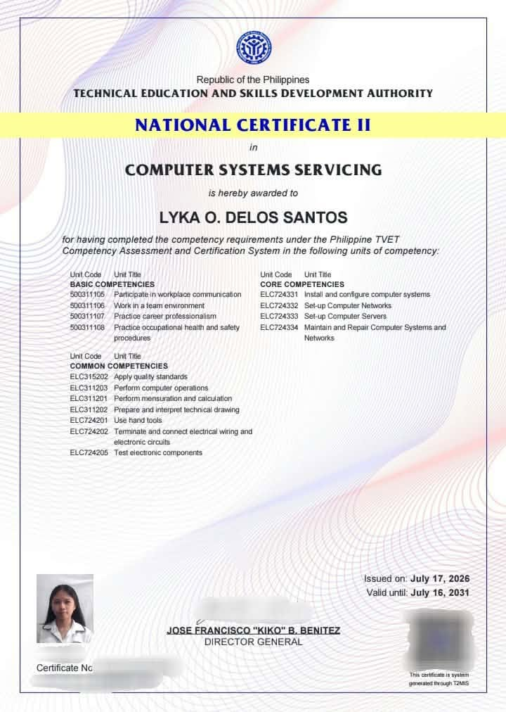

← Back to Certificates
← Back to Certificates
← Back to Certificates
← Back to Certificates

Earned the National Certificate II (NC II) in Computer Systems Servicing, demonstrating foundational skills and knowledge in computer hardware servicing, installing and configuring computer systems, setting up networks, and performing basic troubleshooting and maintenance. This certification reflects my technical knowledge and ability to perform essential computer servicing tasks.
Certificate Title: National Certificate II (NC II) in Computer Systems Servicing
Issued Date: July 17, 2026
Issuing Organization: Technical Education and Skills Development Authority(TESDA)
Course/Subject: System Administration and Maintenance (SAM 202)
Credential Type: National Certificate II (NC II)
Skills Acquired: